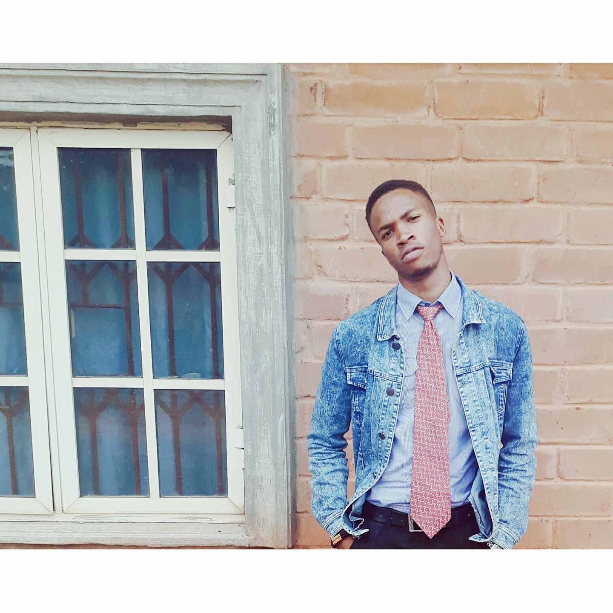

Curriculum vitae of Francis Ese-Ose Ufuah
This web page displays the personal information, academic and professional qualifications of Franis Ese-Ose Ufuah

Education
- First School Leaving Certificate (FSLC), Ambrose Alli University Staff School. 2009
- West Africa Senior School Certificate (WASSCE), Lumen Christi Int'l High School. 2015
- Bachelor of Medicine, Bachelor of Surgery (MB,BS), Ambrose Alli University. 2024
Work Experience
Skills
- Health care
- Web Development (Beginner)
- Customer care
- Leadership
Certifications
- NiMSA Auwal Shanono Foundation Certificate of sevice as Public Relations Officer, 2023
- FECAMDS National award for servicing as the best chapter president (AAU), 2022/2023
CONTACTS